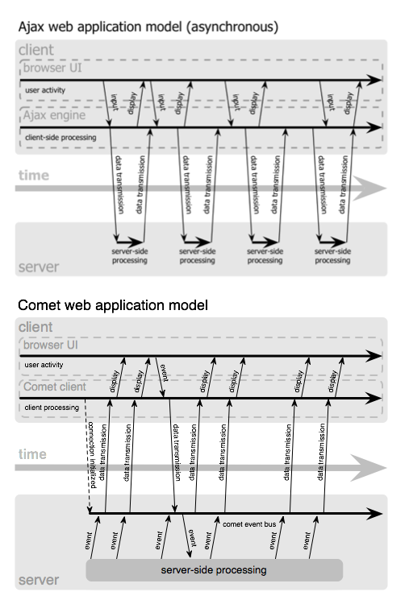

An old web technology is slowly being resurrected from the depths of history. Browser features that have gone untouched for years are once again being employed to bring better responsiveness to UIs. Servers are learning to cope with a new way of doing things. And I’m not talking about Ajax.
New services like Jot Live and Meebo are built with a style of data transmission that is neither traditional nor Ajax. Their brand of low-latency data transfer to the browser is unique, and it is becoming ever-more common. Lacking a better term, I’ve taken to calling this style of event-driven, server-push data streaming “Comet”. It doesn’t stand for anything, and I’m not sure that it should. There is much confusion about how these techniques work, and so using pre-existing definitions and names is as likely to get as much wrong as it would get right.
Defining Comet
For a new term to be useful, at a minimum we need some examples of the technology, a list of the problems being solved, and properties which distinguish it from other techniques. As with Ajax, these aren’t hard to find. A short list of example applications includes:
So what makes these apps special? What makes them different from other things that might at first glance appear similar? Fundamentally, they all use long-lived HTTP connections to reduce the latency with which messages are passed to the server. In essence, they do not poll the server occasionally. Instead the server has an open line of communication with which it can push data to the client.
From the perspective of network activity, we can modify JJG’s original Ajax diagram to illustrate how Comet differs:
{kind=link}

As is illustrated above, Comet applications can deliver data to the client at any time, not only in response to user input. The data is delivered over a single, previously-opened connection. This approach reduces the latency for data delivery significantly.
The architecture relies on a view of data which is event driven on both sides of the HTTP connection. Engineers familiar with SOA or message oriented middleware will find this diagram to be amazingly familiar. The only substantive change is that the endpoint is the browser.
While Comet is similar to Ajax in that it’s asynchronous, applications that implement the Comet style can communicate state changes with almost negligible latency. This makes it suitable for many types of monitoring and multi-user collaboration applications which would otherwise be difficult or impossible to handle in a browser without plugins.
Why Is Comet Better For Users?
Regular Ajax improves the responsiveness of a UI for a single user, but at the cost of allowing the context to go “stale” for long-lived pages. Changes to data from others users is lost until a user refreshes the whole page. An application can alternately return to the “bad old days” and maintain some sort of state mechanism by which it tells client about changes since the last time they’ve communicated. The user has to either wait until they preform some action which would kick off a request to see the updated state from other users (which might impact the action they wanted to preform!) or request changes from the server at some interval (called “polling”). Since the web is inherently multi-user, it’s pretty obvious that regular Ajax imposes usability and transparency hurdles for users. Applications that employ the Comet technique can avoid this problem by pushing updates to all clients as they happen. UI state does not go out of sync and everyone using an application can easily understand what their changes will mean for other users. Ajax improves single-user responsiveness. Comet improves application responsiveness for collaborative, multi-user applications and does it without the performance headaches associated with intermittent polling.
But Does It Scale?
New server software is often required to make applications built using Comet scale, but the patterns for event-driven IO on the server side are becoming better distributed. Even Apache will provide a Comet-ready worker module in the upcoming 2.2 release. Until then, tools like Twisted, POE, Nevow, mod_pubsub, and other higher-level event-driven IO abstractions are making Comet available to developers on the bleeding edge. Modern OSes almost all now support some sort of kernel-level event-driven IO system as well. I’ve even heard that Java’s NIO packages will start to take advantage of them in a forthcoming release. These tools are quietly making the event-driven future a reality. This stuff will scale, and most of the tools are in place already.
I’ll be giving a more on this topic at ETech and describing the various techniques that Comet applications can employ to push data from the server to the client. As always, I’ll post the slides here as well.
The future of the read-write web is multi-user. There is life after Ajax.
Endnotes
First, a word on terminology and its importance. “Ajax” was coined to describe background request/response data transfer. Many of us had worked on solutions to do exactly this, but it wasn’t until a simple name and accompanying description were provided that it was possible for people not directly building applications to describe what it was they liked about it. Common terminology acts not only as a shortcut in discussions between technical folks, but also as a bridge for those who may not be able to give a technical rundown of exactly how it works.
As with Ajax, those of us who build technology are now faced with another communication challenge. We have a hard problem for which solutions are available (and have been for some time) but no way to communicate about them. Terminology is again the missing link. Today, keeping an HTTP connection open for doing low-latency data transfer to the browser has no digestible name. When I describe a cool new hack, there’s nothing to associate it with. When people say “how the hell did they do that?”, we don’t have a compact answer. Therefore, in the spirit of improved communication (and not technology invention), I’m proposing a new name for this stuff.
Next, for those who are network-level programmers or are familiar with sockets and/or basic TCP/IP programming, you will probably scoff at the concept of web applications finally getting this kind of datagram packet support. Fair enough. It is however interesting to note that while more responsive UIs have been available on a variety of platforms to date, the Web has “won” the broad majority of market share for most classes of applications in which the browser provides enough native (non-plugin) support to make the performance and/or UI feasible. Comet may be a new name for an old set of concepts wrapped in some pretty grotty hacks, but that in no way diminishes the market impact it will have (and is already having).
Lastly, as current Dojo users might expect, Dojo already supports Comet via dojo.io.bind(). More than a year ago we designed the API with Comet in mind. In the next couple of weeks I’ll be showing how bind‘s
pluggable transport layer can be combined with Dojo’s event topic
mechanism to provide message delivery on top of a message bus.
24 Comments
I like Winters term ‘Hanging-GET’. It reduces all the mystery and confusion to something small and simple. I have to admit however, if it were not for the buzz-words ‘Ajax’ and ‘Comet’ I may have never stumbled upon these good ideas.
What is the better to use : AJAX Comet or xmpp.
The Lycos chat uses comet for a long time, but is it really better in performance than other languages?
Will you be presenting on Comet at the Ajax Experience?
The industry is full of stupid acronyms that are pretty unhelpful (Service-Oriented Architecture… aren’t most architectures service-oriented?), but at least they’re on track. ‘Comet’ doesn’t even start to give an impression of what you might be referring to.
Sounds similair to the old non-parsed header technique wherein you use the multipart/x-mixed-replace mime type in your response and set boundaries. I guess you combine that with ajax and voila you have persistent client server communication.
I want to make my first implementations on my website. So I’ll be glad if someone can show me trial. nice..it looks great but is there a helpdesc or something like tutorials about Comet ?
Having a buzz-word to describe a concept is a pretty good tactic for making a technique widespread. I myself am now using AJAX because I kept hearing it referred to across the web, and it intrigued me. Googling the word ‘AJAX’ just to find out what it meant was the first step to learning about and eventually using it.
And while I might have not remembered the concept had someone explained it to me in tech terms, the term “Comet” is a good visual association/mnemonic device for a right-brainer creative type like myself.
Kudos. I hope the word catches on, and poo poo on the nay-sayers.
I am working in an IM project and the client is web-based. I did everything using common AJAX techniques and soon I realized that just polling was not a good approach for many reasons. Then I just got the idea to make the server works in a pro-active way registering events and letting user agents be notified (acting as listeners) when some event is shot. As all of you already know, in order to do that using our old-fashion HTTP 1.1 I had to overcome the “request-response” behaviour, making server keep a connection and only sending it back when an event happens. I was very proud of this solution when I decided to look at the web for something similar. Suddenly I realized that many of you have already had this idea, or others similar, during these years. Anyway, I feel part of this community. In addition it is very important to coin a term like this helping it to be spread in IT industry!! Congratulations for the article.
In a nutshell, Lighttpd appears to have better support for Asynchronous transactions (aka AJAX) and also built in support for AJAX push technology (aka COMET, which I will expand upon in upcoming posts. In the meantime checkout Alex Russel’s Blog, and the COMET page in Wikipedia) which we would be relying much upon in the Octabox service. The performance gain in those areas have convinced several prominent web-applications to go the Lighttpd way (Youtube, Meebo and Wikipedia among others)
The expensive web farm load balancers don’t have much to do anymore..
A quick update to this thread, since this is where it all started (in terms of the name Comet at least)…
Caplin Systems (http://www.caplin.com) recently released a free version of their high performance Comet server which is used commercially for many financial applications around the world.
The free version can be found here – http://www.freeliberator.com – and has plenty of documentation, examples and tutorials both online and as part of the kit you can download.
Plug over :)
Like it, the concept even if it is Re-freshed Push, and the word too – Comet makes sense on a lot of levels. I vote for the word TIDE to represent the next re-boiled artefact of the old web that needs a sexy term to spark reincarnation.
I think you are right but this is not good solution for me
It seems that all these things make challenge on the browsers.
Thanks for very interesting article. I really enjoyed reading all of your articles. Keep up the good work. See You
Great information! Now I know what Gmail Talk is made of. But I noticed that you only mentioned the positive side of Comet. Are there any negative aspects of it? When is it not applicable for use?
a quick note on comments: I’ve been deleting (or not approving) those that don’t add to the conversation on this particular post. That policy will continue. Say something interesting, useful, or provocative, or don’t say anything at all.
I really do not understand how does it works.
I wonder if Google is planning on implementing Comet ideas with their new applications that are (hush hush) supposed to let you (somehow) access your e-mail offline; and access AIR like applications off-line (in fact, this is something I think Adobe is trying to create more and more). I don’t mean Comet exactly, I mean something about the theory. I may not know what I’m talking about, but I certainly think there’s lots to be said about this concept itself.
I think its time we had a new term for the whole HTTP streaming push group of techniques, what with emerging technologies such as HTML 5 Web Sockets, Server Sent Events and other techniques for pushing to browsers such as Silverlight and Flex. New technologies like StreamHub Comet Server are using a best-fit approach where they use Comet, HTML 5, etc… to achieve the most reliable connection to a browser. Maybe “Web Push”? Or on the theme of detergents Cillit Bang?
Great article, you show many arguments. Is there some more information about Comet in wikipedia or somewhere ?
A lots of programmers (me too) are realy excited about the possibilities of what can be done with AJAX but there is still not enough info about this technic. Actually web users know something about web2.0 and it’s hard to understand for most of them.
AJAX is great but in fact at advanced projects it is too slow. I have some problems too with a few browsers. That’s why I was interested about comet.
Comet is great alternative for Ajax but it is very hard to find more info about integration with populat projects (for example google API, open source CMS).
I think we must wait for that technology to be more popular.
Hey Alex, you rock. We’ve implemented a full comet server using the Bayeux spec for the .NET platform; it’s called WebSync. Check it out sometime if you have a couple minutes – http://www.frozenmountain.com/websync.
I’d look into [Open]Solaris 10. It introduces a highly scalable and enhanced networking stack, which lowers overhead by reducing the number of instructions required to process packets. This efficiency also increases scalability, allowing more connections and enabling server network throughput to grow linearly with the number of CPUs and NICs.
17 Trackbacks
[…] Comet, the term coined by Alex Russell in his seminal article on this topic, has followed a somewhat similar adoption trajectory. Like Ajax, Comet is a collection of techniques and technologies rather than a single language or option. In fact, Comet techniques have been around for about 8 years, and like Ajax and JavaScript, there is no one company promoting or explaining Comet to the masses. […]
[…] It may be worthy to wrap the file browser as a dojo dijit, and that is also a good candidate for comet. The server may register handlers for file system events(check System.IO.FileSystemWatcher, inotify in Linux) , then push the status change to the client. That is quite a little work, so I would rather leave the placeholder here and implement some other features first. […]
[…] Lately we have been doing some work with persistent connections. If you are familiar with Comet the Flash/AS3 URLStream class provides an interesting alternative. The URLStream class exposes raw binary data as it is downloaded. […]
[…] It was a great discussion on the idea behind Comet (rather than the client polling the server continuously for something, being able to push data and events from the server to the client, all while using the existing HTTP infrastructure, which is not built for this type of communication. In short it involves having a script element request a resource from the server, but the server never returning, just blocking until different messages/events/data needs pushing. Simple in idea but involves some complexities to overcome. I will be trying to look into this further.) […]
[…] I’ve been mucking around with Comet, and ran into a situation which I couldn’t seem to find a solution on the lazyweb for. The problem was that none of the streamed JavaScript code blocks would be executed until the entire page was loaded. […]
[…] » Continuing Intermittent Incoherency » Comet: Low Latency Data for the Browser Comet applications can deliver data to the client at any time, not only in response to user input. The data is delivered over a single, previously-opened connection. […]
[…] SitePen is at the forefront of changes happening on the browser end of browser-based software. We’re also looking deeply at how things are changing on the server. An increasing number of CPU cores in our systems and techniques like Comet require us to think about concurrency beyond simple threading on the server. Relational databases are powerful and reliable, but non-relational databases have the potential to speed access to our ever-increasing volumes of data or to improve productivity by more closely matching our main programming languages. […]
[…] About a year ago, I became aware of Comet, a name for an idea that’s been around for countless years. I believe http://alex.dojotoolkit.org/?p=545 is where it was first coined. In contrast to the ignorant and abusive comments posted on that page, in my case, giving the idea a name was an important step in realising that the idea actually exists. There was a model for setting up low latency bidirectional communication between the web browser and the web server. […]
[…] using Jetty and Dojo Jump to Comments The term comet was created by Alex Russell (dojo). There are several different implementations out there. Jetty, Tomcat and Glassfish (for instance) […]
[…] Comet, a new Web 2.0 buzzword! (and also an electronics store!) […]
[…] as he is apparently a self publishing non-notable tech blogger (in wikipedia terms), and thus the original blog is not a sufficient citation. In some part I agree with wikipedia on this, namely that we should […]
[…] term was coined by Alex Russell of Dojo fame, in a blog piece a little more than two years ago. It has since gained minor traction in the development community, with several projects actively […]
[…] comet is something I’ve been following since Alex Russell coined the term and my interest was re-ignited by Simon Willison’s, Time for Comet […]
[…] using standard HTTP. One of the members of the Dojo Toolkit javascript framework coined the term Comet, a play on the Ajax name, to describe the concept. With the Bayeux protocol, they have found […]
[…] I heard it long ago when it just started out in Ajaxian’s post. They described it best: Alex Russell has coined a term for a flavour of Ajax that’s been getting more attention of late. Comet describes applications […]
[…] primary reference for an accurate definition of Comet, in fact this entry is heavily based on the original definition of Alex Russell and work of other CometDaily contributors like Jacob […]
[…] At the time, I only really knew Perl, and was only self-taught at that. So I wrote the first version as a Perl CGI. I remember abusing the server-based multipart push feature we used for image animation to allow the Perl CGI to stream new messages to the browser as they arrived in the chat room. JangaChat, and this system I worked on at INJersey, may have been some of the first uses of hanging GETs. […]